<<2012年5月 | トップページ | 2012年7月>>
2012年6月
【最高の食べ物】浅賀玲音
今まで食べたものの中で一番美味しかったもの
どうも！玲音です。
今まで食べたものの中で？うーん・・・。
ファミリーレストランの二段重ねハンバーグ！！（笑）
動物カメラのロケで長野に行った時、ばんごはんを食べに行ったんですが、
美味しすぎてやばかったー(´Д｀)
でも白米ないと生きていけないから、やっぱり白米！
次に書くのは・・・
次に書くのはニイナー！！
いつも笑顔のニイナだけど、ふと真顔になる時があって・・・
おぉ怖～
でも明るくて優しいハッピーガールだよ！
ニイナ次よろしく！！
投稿者:浅賀玲音 | 投稿時間:18時00分 | カテゴリ：We are 大天才テレビジョン | 固定リンク


 " title="ソーシャルブックマークについて">
" title="ソーシャルブックマークについて">
※NHKサイトを離れます。
【てれび戦士プロデュース室】ヒャダインさん登場！！
いよいよ発表された「てれびちゃん」の楽曲。
タイトルは「公共電波にのっかって」！！
曲はなんとヒャダインこと前山田健一さんの作曲です！
生放送ではヒョロインになっちゃったけど、本当に気さくで優しいお兄ちゃん、って感じの方でした。
ヒャダインさんとてれびちゃん
てれびちゃんの曲「公共電波にのっかって」の歌詞は、こちらから応募を受け付けています。
みなさんが考える「テレビの素晴らしさ・楽しさ・テレビにまつわる思い出」をステキな詞にして送って下さいね。
投稿者:大天才テレビジョン社員２号 | 投稿時間:21時00分 | カテゴリ：てれび戦士プロデュース室 | 固定リンク
" title="ソーシャルブックマークについて">
※NHKサイトを離れます。
【最高の食べ物】竹原司
今まで食べたものの中で一番美味しかったもの
ぼくが今まで食べた食べ物で一番おいしかったものは、
海のちかくで食べた「アワビのバターやき」です。
バターのかおりがほんのりかおってプリプリで
すごくおいしくて、「幸せ～」と思いました。
次に書くのは・・・
次はあさか君。
よく、ぼくとか島田君を「グヒヒヒ～」と言いながら追いかけてきます。
おもしろいし、やさしいお兄さんです。
では、よろしく～。
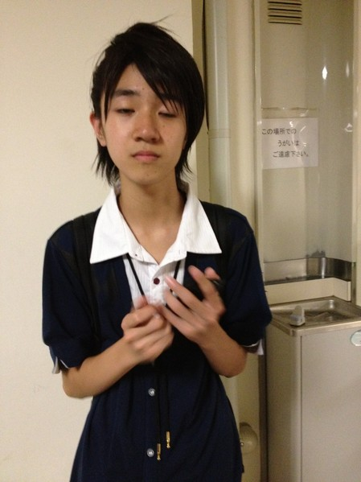
投稿者:竹原司 | 投稿時間:18時00分 | カテゴリ：We are 大天才テレビジョン | 固定リンク
" title="ソーシャルブックマークについて">
※NHKサイトを離れます。
【乗りすけFile】 No.42 サラブレッド
乗りすけFile No.42：サラブレッド（６月２７日放送）

全長:約3ｍ
全高:1m70cm
全輻:約1ｍ
重量:約500ｋｇ
定員:1名
高速で走ることを追求し、徹底的に品種改良された馬。法的には自転車と同じ軽車両として扱われ、公道を走行することも可能である。500kg近い馬体を支える細く長い足が特徴。後ろ足の筋肉が推進力を生み出す。最高速度は70km/hに達する。足裏は、蹄を守る靴である蹄鉄を装着する。燃料はエンムギやニンジン。
これまでの【乗りすけFile】はこちら
投稿者:大天才テレビジョン社員２号 | 投稿時間:19時18分 | カテゴリ：乗りすけさん | 固定リンク
" title="ソーシャルブックマークについて">
※NHKサイトを離れます。
【最高の食べ物】黒澤美澪奈
今まで食べたものの中で一番美味しかったもの
どもっ(´∀｀)/ みれなです！！
いきなりですが・・・１番おいしかった食べ物は、カツカレーです！
この前、いどう教室に行って、昼ごはんがカツカレーだったんです！
でも、たべたことなかったんです！
なので、パクってたべたらおいしかったぁ～
次に書くのは・・・
次は、おない年の竹ちゃんです！
この写真すごいかお・・・・・・。
では、よろしく～ね！
投稿者:黒澤美澪奈 | 投稿時間:18時00分 | カテゴリ：We are 大天才テレビジョン | 固定リンク
" title="ソーシャルブックマークについて">
※NHKサイトを離れます。
【大天才テレビショッピング】～二人三脚シューズ～
「大天才テレビショッピング」６回目の放送はご覧いただけたでしょうか。
今回ご紹介したのは、大天才テレビジョン商品開発部が総力を挙げて開発した「二人三脚シューズ」です。
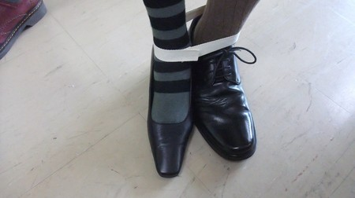
詳細については、 「大天才テレビショッピング」のページ をご覧ください。
どうぞよろしくお願いいたします。
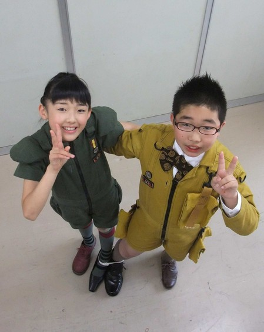
モデル：山田陶子さん 島田太一さん
投稿者:大天才テレビジョン社員３号 | 投稿時間:18時42分 | カテゴリ：大天才テレビショッピング | 固定リンク
" title="ソーシャルブックマークについて">
※NHKサイトを離れます。
【最高の食べ物】寺田朱里
今まで食べたものの中で一番美味しかったもの
今までで食べたものの中で一番美味しかったもの・・・
うーむむ・・・わすれちゃった！！ふふ
でもねー！！しょうゆとか、たくあんとか美味しいよ！！ふふふ
大好き！！
オススメだよ！！
次に書くのは・・・
み－－－－－－－－－－－－－－－－－－－れな－－－－－－－－！！
ミニスカートがとても似合う元気な女の子。
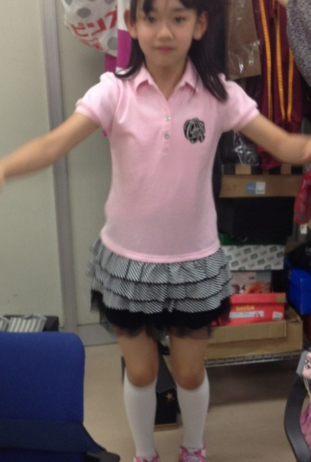
あ・・・間違えた
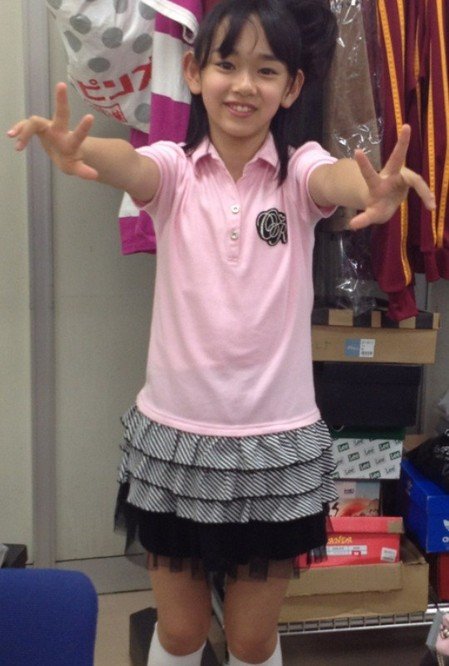
足に目がいく・・・
おじさんかしら。
投稿者:寺田朱里 | 投稿時間:18時00分 | カテゴリ：We are 大天才テレビジョン | 固定リンク
" title="ソーシャルブックマークについて">
※NHKサイトを離れます。
【最高の食べ物】島田太一
今まで食べたものの中で一番美味しかったもの
とんこつラーメンを最初に食べた時です。
ニンニク、カポってつぶして面白かったです。
麺はカタメでたのみます。
次に書くのは・・・
次に書く朱里ちゃんは理科にくわしいひとを探し求めてます。
見つかるといいね・・・なんつって。
( ・ω ・)ｂイイネ
（おまけ）
スタッフに勉強を聞いてる朱里
そんな朱里を激写する島田

投稿者:島田太一 | 投稿時間:18時00分 | カテゴリ：We are 大天才テレビジョン | 固定リンク
" title="ソーシャルブックマークについて">
※NHKサイトを離れます。
【アイドルである私の一日】受信チョコ
ボクの１日は、ランニングをした後にごはんを食べて
またランニングしてごはん食べて
夜になる前に魚をすででとって
また食べるの！
自分で料理作るんだ！！
しゃけのやくやつが大好きなんだ。
本当にマイウーだよねw
次に書くのは・・・
次は島田太一くんやで～！
目がねがすごくにあってる太一。
太一は、つかちゃんのせんぱい。
せんぱい太一、よろしくね。
投稿者:受信チョコ | 投稿時間:18時00分 | カテゴリ：We are 大天才テレビジョン | 固定リンク
" title="ソーシャルブックマークについて">
※NHKサイトを離れます。
【アイドルである私の一日】画面さくら
今日はひさびさの休日です！
だから、ショッピングに行ってキュートなお洋服を買いました。
お家に帰って着てみたら、にあっていてうれしかったです。
これからもいろいろなお洋服を買って、
おしゃれさんになりたいなぁと思います。
次に書くのは・・・
チョコちゃんはいつも元気でかっこいいです。
ダンスがすごくうまいんですよ！
つぎはチョコちゃんが大天ブログを書きます。
お楽しみに！

投稿者:画面さくら | 投稿時間:18時00分 | カテゴリ：We are 大天才テレビジョン | 固定リンク
" title="ソーシャルブックマークについて">
※NHKサイトを離れます。
【データ放送でのアバターの登録方法】電波ミルクが挑戦！！

「てれびちゃん１号 電波ミルクでーす。今日は天てれのデータ放送をより楽しもうってことで『アバターの登録』に挑戦しまーす」
① 番組会員ページにログイン

「まず、番組ＨＰから会員ページにログインします」

「会員じゃない人はダメダメ。会員になってからやってね」

「無料だからさー入って入って」
② アバターを作る

「まず、会員ページにログイン」

「ログインしたら、会員ページのアバターメーカーでアバターを作りまーす」
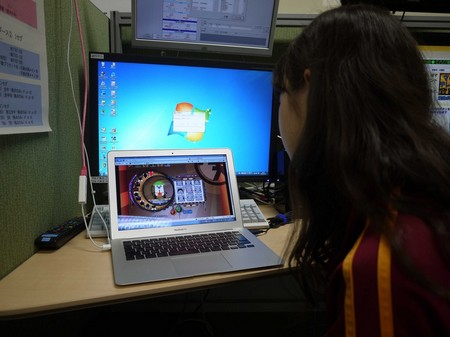
「むむむ・・・結構悩むなぁ」

「こんなかんじでいいかな～ よし、決定！」

「できたー！」
③ パソコンでマイテレビ登録

「次に、『マイテレビ登録』」というのをします」
※マイテレビ登録：自宅のテレビなどを登録。一人５台まで可

「これは、普段見ているお家のテレビなんかを登録するってことだよ。
会員ページＴＯＰで『マイテレビ登録』ボタンをポチッとなー」

「およよ、また『マイテレビ登録』ボタンがぁ。ポチッとな」

「そして、『マイテレビの名前』と『マイテレビで表示するあなたの名前』を入力。
『ミルクのテレビ』・・・『電波ミルク』・・・と」

「で、次へ行って『確定』」

「マイテレビ登録完了！」
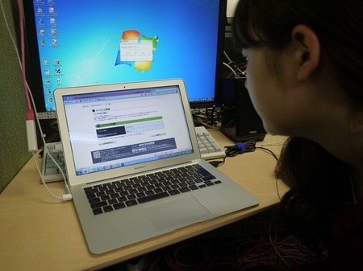
「『ワンタイム登録コード』というのをメモメモ」
④ データ放送で登録コード入力
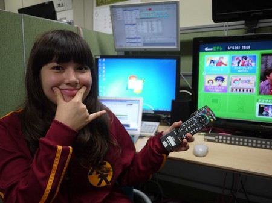
「次はテレビだよー！ついてきてるかーい。
テレビはインターネットにつないだ状態だからね」
（ケーブルテレビでの視聴でも可） ※つなぎ方詳細：ネットにつなごうHP
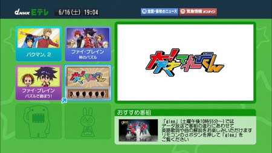
「天てれのデータ放送は、Ｅテレでリモコンのdボタンを押して、天てれのアイコンを選んで決定」
Eテレ⇒dボタン⇒大！天才てれびくん

「まだ、アバターがないのだ～（涙）」
「ここで『マイテレビ登録』を選んで押す（決定）」
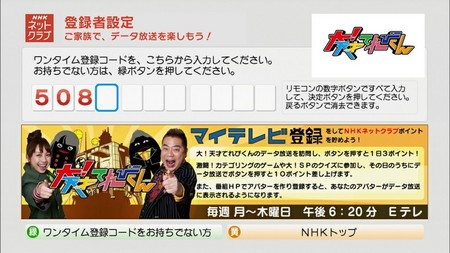
「すると、さっきの『ワンタイム登録コード』を入力する画面がでるので、リモコンで数字を入力」
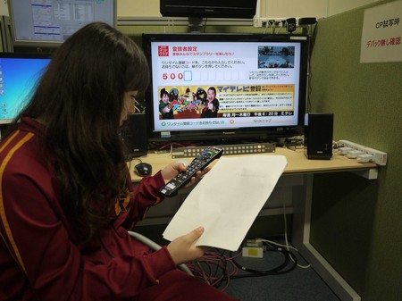
「ボスとアッキーが出迎えてくれるよー。これで、ＯＫ！」

「おつかれさ～ん」
⑤ アバターをテレビに送る
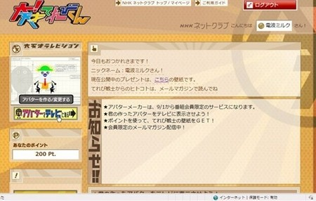
「もう一度、パソコンに戻って、ログイン。 今度は、『アバターをテレビに送る』ボタンをクリック」

「これで、表示まで5～10分は待ってくださいねー」
「データ放送でSUSHIカートでもやって待っててね～」

「10分後、天てれデータ放送のＴＯＰに戻って見ると！」

「さっき作ったアバターが表示されてるし、私、ミルクの名前も入ったよー！」
「ＮＨＫネットクラブポイントも表示されていますね～ ここで、耳寄り情報！」

「毎日1回、このポイントの横のボタンを押すと、3ポイント！」

「カテゴリングなどのゲームやクイズに参加して、その日のうちにボタンを押すと、１０ポイントもらえちゃうのだー」

「ということで、ミルクにも登録ができました！」
「やったぜー！みんなも頑張ってやってね」
投稿者:大天才テレビジョン社員１号 | 投稿時間:00時00分 | カテゴリ：お知らせ！ | 固定リンク
" title="ソーシャルブックマークについて">
※NHKサイトを離れます。
【乗りすけFile】 No.41 ウェイクボード
乗りすけFile No.41：ウェイクボード（６月２０日放送）
全長:1m30cm
全高:25cm
全輻:42cm
重量:約4kg
定員:1名
価格:11万円
モーターボートなどの船に牽引されるボードに乗って水上を滑走する、アメリカ西海岸生まれのウォータースポーツ。ライダーは船から伸びるロープのハンドルを握る。ボードは水に浮く軽量プラスチック製で、ブーツが取り付けられている。底面には直進性を高めるための整流板を装備する。単に滑走するだけでなく、船が起こす波に乗ってジャンプや宙返りも可能。女性や子どもの愛好者も多い。
これまでの【乗りすけFile】はこちら
投稿者:大天才テレビジョン社員１号 | 投稿時間:18時42分 | カテゴリ：乗りすけさん | 固定リンク
" title="ソーシャルブックマークについて">
※NHKサイトを離れます。
【アイドルである私の一日】電波ミルク
こんばんわんころりんちょ～
てれびちゃん１号、電波ミルクだよ～！
この前ね～、お茶を飲んだの～！！
ぬはは
そしたらね、
そうめんのつゆだったのー！！
変なの～！変！コンコンコンー。
次に書くのは・・・
さくらー！！！
さくらと私はね。身長差がすごいから、会話をする時はね
さくらは真上を向いていて、私が真下を向いてるのー！！
布団と電灯の関係だね～。
投稿者:電波ミルク | 投稿時間:18時00分 | カテゴリ：We are 大天才テレビジョン | 固定リンク
" title="ソーシャルブックマークについて">
※NHKサイトを離れます。
【大天才テレビショッピング】～携帯ヒラヒラ～
「大天才テレビショッピング」５回目の放送はご覧いただけたでしょうか。
今回ご紹介したのは、大天才テレビジョン商品開発部が総力を挙げて開発した「携帯ヒラヒラ」です。
詳細については、 「大天才テレビショッピング」のページ をご覧ください。
どうぞよろしくお願いいたします。
モデル：竹原司さん
投稿者:大天才テレビジョン社員２号 | 投稿時間:18時42分 | カテゴリ：大天才テレビショッピング | 固定リンク
" title="ソーシャルブックマークについて">
※NHKサイトを離れます。
【ヒット番組への道】 てれび戦士が世界一に！！
こんばんは！ 大天才テレビジョン・広報のもっちーです♪
（メールマガジン「大天才テレビジョン 会報」をご購読いただいている皆さまにはおなじみです！いつもありがとうございます♪）
本日放送した「ヒット番組への道 ～１分間で世界記録を目指せ！～」、ご覧いただけましたか？ヾ|*´･ω･|q
出川特命Ｐが考えた新種目『１分間でくつ下入れ』（片足だけを使って、くつ下をカゴの中に入れていく競技）に、てれび戦士の結実が挑戦！
そして、なんと、ギネス世界記録となる「１１足」を達成したのです！おめでとうございます！！＼(≧∀≦)／
結実の持ち前の運動神経と、「１足同時つかみ」の技は、ホントすごかったですね！！大天才テレビジョンの一員として私も誇らしく思います＼(((￣▽￣)))／ﾔｯﾀｰ!!
大天才テレビジョンは、これからも、世界のトップをねらっていきます！応援よろしくお願いしま～す(⌒∀⌒)ゝ
投稿者:もっちー＠大天才テレビジョン広報室 | 投稿時間:18時30分 | カテゴリ：お知らせ！ | 固定リンク
" title="ソーシャルブックマークについて">
※NHKサイトを離れます。
【黒い私】鈴木あきえ
こんにちは♪最近お仕事の関係で、期間限定黒髪の鈴木APです(^-^)/
いつも茶色いから、なんだか違和感があるのですが…
案の定、てれび戦士は
『あっきー黒ーい！なんかへーーん！(・∀・)』と
声を大にして言ってきました（笑）
あ～子供って素直だなぁ～と思った瞬間でした
早く茶色に戻そーっとε＝┏(；￣▽￣)┛
次に書くのは・・・
次に書くのは、てれびちゃんの電波ミルクさん☆
最近、電波ミルクさんに『てれびちゃんの調子どうよ？』って聞いたら
『あ～～～ちょいちょい進展してるよ～うふふふふ～』
と、ポワンポワン感全快で言ってました。
ミルクさんのブログみるの、なんかこわいなぁ…（笑）
投稿者:鈴木あきえ | 投稿時間:18時00分 | カテゴリ：We are 大天才テレビジョン | 固定リンク
" title="ソーシャルブックマークについて">
※NHKサイトを離れます。
【ラムネのために体をはった】島田太一
かき氷屋さんでラムネが売っていたんです。
ラムネは水や氷が入ったおけで冷やされていて
「そのおけの中にかおを入れて、口でラムネをとることが出来たらラムネをあげるよ」
とかき氷屋さんが言ったので
頑張ってラムネをゲットしました～。
イエイ d( ´ε｀ *)
次に書くのは・・・
てれび戦士（主に崚行くんと浅賀くん）が
あきえさんにつけたあだ名の数は11コの
鈴木あきえさんで～す。
お楽しみに！・・・

投稿者:島田太一 | 投稿時間:18時00分 | カテゴリ：We are 大天才テレビジョン | 固定リンク
" title="ソーシャルブックマークについて">
※NHKサイトを離れます。
【いっぱいいてうれしかった～！】竹原司
こんにちは！司で～す。
この前高知で中継した時、地域の子たち何人来てくれたと思います？
なんと40人もの子たちが来てくれたんです。
本当にいっぱいで、お店に入りきれないくらい来てくれてうれしかった～！
高知サイコ～！
次に書くのは・・・
次は、島田先輩です。
島田先輩は、いつもおもしろくてみんなをよろこばせてくれて、
僕の中ではヒーロー的なそんざいです。
じゃあ、島田先輩がんばれ～！！

投稿者:竹原司 | 投稿時間:18時00分 | カテゴリ：We are 大天才テレビジョン | 固定リンク
" title="ソーシャルブックマークについて">
※NHKサイトを離れます。
【リベンジ!!!!】ソーズビー航洋
皆サーん（＾Ｏ＾）KOYOだよん
今回は、LOVELetterの時に、字が汚ない
と言われたので、リベンジします(￣^￣)ゞ
これをみよ！
どうですか？意外と上手くないですか？
みれなちゃんからもらった、ＢＤプレゼントの筆ペンを使いました！
感想は、テレパシーでお願いします(￣^￣)ゞ
次に書くのは・・・
つかちゃんです！！！！！！
天使の心の塊のつかちゃんは、演技上手いし、可愛いし、優しいし、
褒め上手窶ｼ←LOVELetterうまそう（笑）
恐竜にも詳しいよー（＾Ｏ＾）
つかちゃーんo(^▽^)oヨロピクちゃん！
投稿者:ソーズビー航洋 | 投稿時間:18時00分 | カテゴリ：We are 大天才テレビジョン | 固定リンク
" title="ソーシャルブックマークについて">
※NHKサイトを離れます。
【乗りすけFile】 No.40 ラフトボート
乗りすけFile No.40：ラフトボート（６月１３日放送）
全長：3m97cm
全高：74cm
全幅：1m65cm
重量：約60kg
定員：8名
価格：約35万円
川下りを楽しむためのボート。急流で岩などに接触しても破損しないよう、船体は頑丈なプラスチックで作られている。船体内部は8つの気室に分かれているため、1箇所が破損しても沈むことがない。反り上がった船首と船尾によって、波を乗り越えても水をかぶりにくい。底部には水を抜く穴があり、入った水は自動的に排水する。
定員は8人だが、漕手2人と、漕ぎ方を指示するガイドの3人で操船可能。流れの緩やかな場所では雄大な自然の景観を堪能、激流ではジェットコースターのようなスリルを味わうことができるボートである。
これまでの【乗りすけFile】はこちら
投稿者:大天才テレビジョン社員１号 | 投稿時間:18時43分 | カテゴリ：乗りすけさん | 固定リンク
" title="ソーシャルブックマークについて">
※NHKサイトを離れます。
【えんそくのしょうげき！】延命杏咲実
この前の月曜日、えんそくにいきました！
山のぼりをしました。楽しかった！
山のぼりしたら、おべんとう！ えんそくのていばんですよね。
そしたら、しょうげきはおこりました。
おべんとうを食べはじめたころ、
ちがう小学校の子たちもえんそくでおべんとうを食べに来たみたいだったので
あたりを見回していたら、
じむしょのともだちがいたのです！びっくり！！！
その後、手をふってくれて、きづいてくれました。
でも、本当にびっくりしました！
次に書くのは・・・
つぎに書く人はズッさん！
ズッさんは・・・おしゃべり！
いつもしゃべってるよ。あと、わらい声が大きい！
ズッさんのわらい声、なんかすき☆
それにいつもニコニコしてます！
ズッさんのおもしろ！？ブログをお楽しみに！
投稿者:延命杏咲実 | 投稿時間:18時00分 | カテゴリ：We are 大天才テレビジョン | 固定リンク
" title="ソーシャルブックマークについて">
※NHKサイトを離れます。
【大天才テレビショッピング】～チラ見ラー～
「大天才テレビショッピング」４回目の放送はご覧いただけたでしょうか。
今回ご紹介したのは、大天才テレビジョン商品開発部が総力を挙げて開発した「チラ見ラー」です。
詳細については、 「大天才テレビショッピング」のページ をご覧ください。
どうぞよろしくお願いいたします。
モデル：金子隼也さん
投稿者:大天才テレビジョン社員３号 | 投稿時間:18時42分 | カテゴリ：大天才テレビショッピング | 固定リンク
" title="ソーシャルブックマークについて">
※NHKサイトを離れます。
【ワンピース】出川哲朗
みんなにおもしろいと言われ
うめぼし君に借りて読み始め中
ヤバイ？ はまるかも？
次に書くのは・・・
☆ Mouster 延命杏咲実 ☆
みんなのアイドル延命ちゃん
しかし、ボスにはなついてくれない・・・
※大天才テレビジョン広報部より通告
てれび戦士諸君、これから延命ちゃんのことは「モウスター」と呼ぶように。ボスのお達しだ。
投稿者:出川哲朗 | 投稿時間:18時00分 | カテゴリ：We are 大天才テレビジョン | 固定リンク
" title="ソーシャルブックマークについて">
※NHKサイトを離れます。
【MTK】「空と海の光」
6/11に放送が始まったMTK「空と海の光」は浅賀玲音と長谷川ニイナのデュオ。作詞と作曲は、元ピチカート・ファイヴの高浪敬太郎改め高浪慶太郎さんです。
テーマは時間。決して戻ることのできない瞬間を思った、美しくも切ない曲に仕上がりました。空、海、光のモチーフは、高浪さんが住んでいる長崎県の風景をイメージしています。

レコーディングスタジオにて高浪慶太郎さんとともに。
映像は海辺の町を舞台にまさに青春映画という趣で出来上がりました。
誰もが生まれた瞬間から死に向かう生を生き、歳を重ねていくもの。人生には、たくさんの出会いとたくさんの別れが待っています。どんなに素敵な思い出もいつかは忘れることでしょう。ふたりの前に現れた老人は何者だったのでしょうか。
ロケ現場の砂浜にて老人役の小出信明さんとともに。
投稿者:大天才テレビジョン音楽制作部 | 投稿時間:18時53分 | カテゴリ：お知らせ！ | 固定リンク
" title="ソーシャルブックマークについて">
※NHKサイトを離れます。
【ハマっていること】岡田結実
今、パワーストーンにハマっています。
こないだパワーストーンの本を買いました。
本当におもしろい（´ω｀/）
今一番ほしいパワーストーンは…タイガーアイがほしい！！！
タイガーアイの意味は、お金がたまるという意味。
今ね、お花を育てたいからお花を買う金をためたい～!! みどりのカーテンやりたい!!
トマトを育てた～い！(*´ω｀*)
ではでは！￣ω￣
次に書くのは・・・
次の人は、のどがね、子どもののどなの（笑）
おなかがけっこうでかくてね、声がでかくてね、
チョーやさしい、それは…
出川さんだよーん！
出川さんよろしくね！
投稿者:岡田結実 | 投稿時間:18時00分 | カテゴリ：We are 大天才テレビジョン | 固定リンク
" title="ソーシャルブックマークについて">
※NHKサイトを離れます。
ボツ写真発掘大会～山田陶子編～
大！天才てれびくんファンのみなさま
いつもブログをご覧になって頂きありがとうございます。
前回、ブログ記事でボツになった写真を特集したら意外に？好評だったので、
第２弾ということで、一人のてれび戦士にこだわってボツ写真をお目に掛けたいと思います。
今回は「私は天才」でお馴染み（最近はあまり聞かない気がしますが…）山田陶子さんです。
まずは、浅賀が撮影したこの２枚
よく白目をむきますね。「スリラー」でもやってましたよね。
これは元気な感じ。
奥には、以前陶子さんにフルーツジュースを差し入れした崚行がいますね。
最後は古坂大魔王が撮影した陶子さんです。“トコ”ではなく“トーコ”です。
大魔王の身長は186cm。陶子さんは143cmくらい。その差40cmの“標高差”を見よ！！！
これからも応援よろしくね！
おしまい。
投稿者:大天才テレビジョン社員２号 | 投稿時間:16時30分 | カテゴリ：お知らせ！ | 固定リンク
" title="ソーシャルブックマークについて">
※NHKサイトを離れます。
【ポップコーン】長江崚行
この前、文房具を買いにスーパーへ行ったら、たまたまスーパー内で友達と遭遇。
ゲームセンターにある子供向けのポップコーンを作るゲームで、必死にポップコーンを作ってました(笑)
回したらポップコーンが出来るタイプで、恥を捨てて真剣に回していました(笑)
ポップコーンが出来たところで、友達に話しかけました。
顔の血の気が引いていったのが、よーく分かりました(笑)
次に書くのは・・・
ポップコーンとか、ゲームセンターはとてもとてもにぎやかで楽しく、反対に騒がしいところでもありますよね！
ゲームセンターなんて敵じゃないレベルの騒がしさ、結実が次のブログを書いてくれまーす！
こんなこと言ったら、また結実に怒られてしまうのかな(笑)
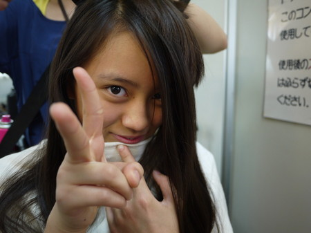
投稿者:長江崚行 | 投稿時間:18時00分 | カテゴリ：We are 大天才テレビジョン | 固定リンク
" title="ソーシャルブックマークについて">
※NHKサイトを離れます。
「大！天才てれびくんスペシャル in NHKホール」開催決定！
「大！天才てれびくん」では、夏の公開収録が開催決定！歌あり！踊りあり！芝居あり！出川特命Ｐ、鈴木ＡＰ、そしててれび戦士が繰り広げるステージを見に行こう！観覧の申し込みはお早めに！
１．日 時 平成２４年８月４日（土）〔２回公演〕
〔１回目〕
開場：午前１１時３０分 開演：午後０時３０分 終演予定：午後２時
〔２回目〕
開場：午後３時３０分 開演：午後４時３０分 終演予定：午後６時
２．会 場 ＮＨＫホール
３．出 演 出川哲朗、鈴木あきえ、てれび戦士 ほか
４．観覧申込 ウェブもしくは携帯から
しめきり 平成２４年６月２２日（金）午後１１時５９分まで
１回目公演の観覧申し込みはこちら
２回目公演の観覧申し込みはこちら
携帯からは
メニュー → ＴＶ → ＮＨＫ → 観覧
※応募多数の場合は抽選となります。
投稿者:大天才テレビジョン社員３号 | 投稿時間:14時05分 | カテゴリ：お知らせ！ | 固定リンク
" title="ソーシャルブックマークについて">
※NHKサイトを離れます。
【カラオケー！太一ー！】浅賀玲音
どうも！玲音です！
最近カラオケに行きたくて仕方ありません(T∀T)
1人でも良いから行きたいです・・・。
皆さんもカラオケ好きですか？
僕はホントに大好きすぎてやばいです(´･ω･)ゞ
あ、話変わるんですけど、一日に太一に3回も
名前を呼びまちがわれたんです(´･ω･｀)
・・・覚えてくれぇー！！（笑）
次に書くのは・・・
次に書く人は崚行です！！
アヒル口のクオリティがすごいです( ﾟ∀ﾟ)(笑）
でも前の方が良かったんですよ！あっきーも大絶賛です（笑）
あとツンデレだよー。
この写真もイヤイヤ言いながら結局やったっ(´Д｀)ww
投稿者:浅賀玲音 | 投稿時間:18時00分 | カテゴリ：We are 大天才テレビジョン | 固定リンク
" title="ソーシャルブックマークについて">
※NHKサイトを離れます。
【オープニングが・・・！？】黒澤美澪奈
どもっ（＾v＾)ゞ みれなです～！！
最近、気づいたんですけど、オープニングで、
わたしのテレビのしたに、な、な、なんと、子づれがいるんです！
お母さんと子供が３人とお母さんのせなかに
小さい赤ちゃん！
みんなもチェックしてみてね！
次に書くのは・・・
次は、「あひる口」のじょうずなあさかれおくんです。（笑）
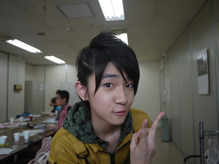
中２のたよれるお兄さんです☆
では次、よろしくおねがいしま～す！
投稿者:黒澤美澪奈 | 投稿時間:18時00分 | カテゴリ：We are 大天才テレビジョン | 固定リンク
" title="ソーシャルブックマークについて">
※NHKサイトを離れます。
【ヒット番組への道】大天才テレビジョンにゾンビ襲来
こんにちは！ 大天才テレビジョン・広報のもっちーです♪
（メールマガジン「大天才テレビジョン 会報」をご購読いただいている皆さまにはおなじみです！
いつもありがとうございます。番組会員へのご登録お待ちしています♪）
先月放送した「ヒット番組への道～特別企画 マイケル・ジャクソンの『スリラー』を踊れ！」は、
ご覧いただけましたか？
てれび戦士たちのゾンビ顔＆ダンス、すごかったですねー！！
見ていない方は、ぜひぜひ、今週７日（木）に予定している再放送をご覧くださいっヾ|*´･ω･|q
極秘ルートから、寺田朱里ゾンビが撮影した
控室でのゾンビたちの写真を手に入れましたので、
ここで公開させていただきます！フォー(=ﾟωﾟ)ﾉ
まずは、メイク室で塗られる崚行ゾンビ。
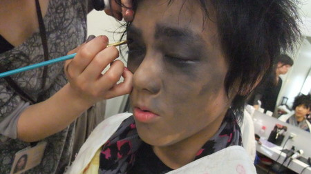
手の先までぬかりないぜ！
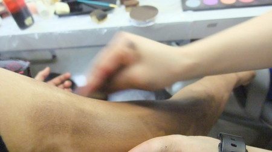
できあがり！
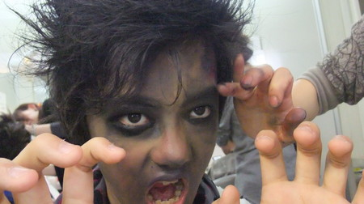
鳥のフンでもかけられたか？島田ゾンビ。
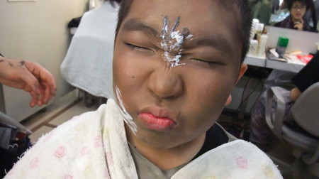
歌録音で大活躍したソーズビー・ジャクソンと、ニイナゾンビ。
２人とも、英語の発音が素晴らしいのです。
さすが！私もマネしたい…
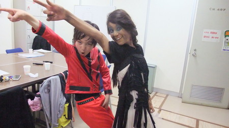
「あっち向いてホイ！」を和やかに楽しむゾンビたち。
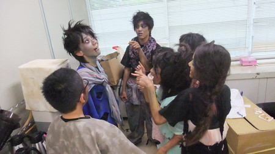
でも、冷静に見ると、怖い…
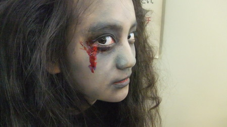
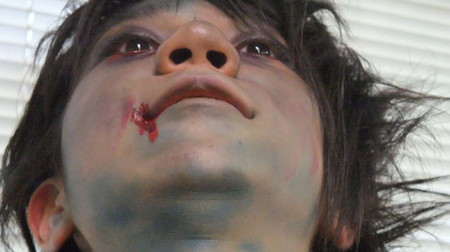
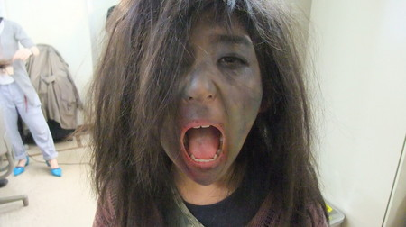
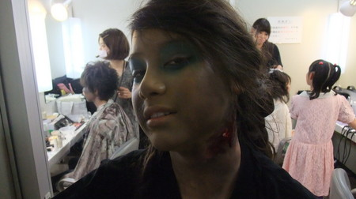
竹原ゾンビが泣いたのもうなずけます。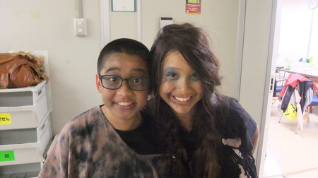
撮影は朱里ゾンビでお送りしました。ギャーーー！
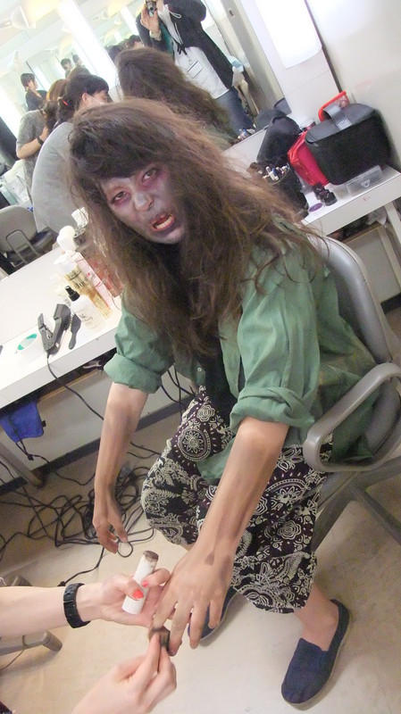
繰り返しになりますが、
「ヒット番組への道 ～特別企画 マイケル・ジャクソンの「スリラー」を踊れ！～」は、
今週７日（木）に一挙再放送を予定しています。
見逃した方も、見逃してない方も、是非ご覧くださいね～！！
投稿者:もっちー＠大天才テレビジョン広報室 | 投稿時間:14時42分 | カテゴリ：お知らせ！ | 固定リンク
" title="ソーシャルブックマークについて">
※NHKサイトを離れます。
【1年に1度？】金子隼也
中学生になって初めての体育祭！
体育祭当日はとてもいい天気でした。
僕が出た種目はムカデ競走、1,000mリレーに出場しました。
1,000mは10人中4位！
リレーは見事1位！ムカデ競走は2位！でした。
1,000mは4位だったのが悔しかったです。
そして結果は学年優勝に総合優勝でした。
とても嬉しかったです。
体育祭は僕が1年に1度輝く時！とお母さんに毎年言われますが、
今年は違いますよー！！（笑）
次に書くのは・・・
5月22日といえば・・・・・・
美澪奈の誕生日！
11才のお誕生日おめでとう
バースデーケーキはどんなケーキだったの？
次は1つお姉さんになった美澪奈だよー！
投稿者:金子隼也 | 投稿時間:18時00分 | カテゴリ：We are 大天才テレビジョン | 固定リンク
" title="ソーシャルブックマークについて">
※NHKサイトを離れます。
【ドウブツカメラ！】猫（撮影：ソーズビー・延命ちゃん）
５月１４日放送「被写体…猫」
今回の動物カメラマンは、ソーズビー航洋と延命杏咲実。
２人が撮ったベストショットはこちら！
※画像をクリックで大きな画像が開きます。
開いた画像を右クリックで画像を保存できます。
撮影：ソーズビー航洋 『姫の庭』
撮影：延命杏咲実 『ウインク練習中』
ロケ中の２人のオフショットはこちら！
投稿者:大天才テレビジョン社員３号 | 投稿時間:18時40分 | カテゴリ：ドウブツカメラ！ | 固定リンク
" title="ソーシャルブックマークについて">
※NHKサイトを離れます。
【むしめがね】寺田朱里
もうすぐ夏だねー！！ふふふー！
暑いと眉間にしわがよるよねー！！うふふー。
あと、風鈴がそこにないのに、風鈴の音が聞こえてきたりねー！
めがねがむしむしくもるよね！とぅんとぅる～♪ とぅんとぅん♪
どぅーん♪ どぅーん♪
どぅーーーん♪
ばばーーーああん♪
次に書くのは・・・
金子しゅんやぁぁああああああああああああああああ
しゅんやは髪の毛が細くてふわふわしてて、もわもわしてて
いいよー！！ほら！

ふふふーーーー！
ばいばあああああああああああああああああああああああい
投稿者:寺田朱里 | 投稿時間:18時00分 | カテゴリ：We are 大天才テレビジョン | 固定リンク
" title="ソーシャルブックマークについて">
※NHKサイトを離れます。
【テストー】山田陶子
五年生はじめてのテストがありました・・・。
じしんがあるのか、ないのか(´Д`)。
たのむぅ。かえってくるなー。テスト。
たのむ・・・。
次に書くのは・・・
次は、あかりちゃんよ。
やさしくて、おもいやりがあって、かわいいと
自分のことをそう思っているあかりちゃんでした。
投稿者:山田陶子 | 投稿時間:18時00分 | カテゴリ：We are 大天才テレビジョン | 固定リンク
" title="ソーシャルブックマークについて">
※NHKサイトを離れます。
ページの一番上へ▲